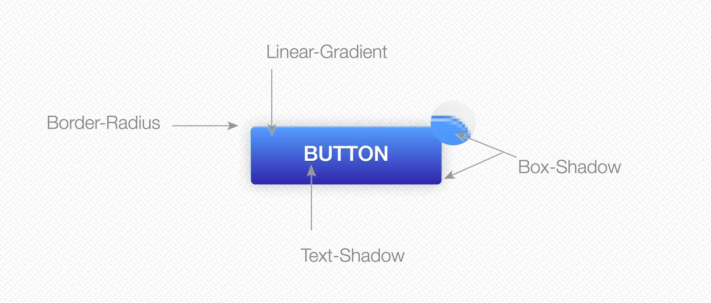

With a few simple changes to how we handle our web graphics we can prepare for the retina web.
Retina screen usage surges. New devices have progressively high density displays.
There’s an ever growing body of javascript helper libraries link, techniques link link, and opinions link link link link about how to what this means for our website and how to adapt our graphical assets.
This situation reminds me of a similar one concerning CSS and grids, to which Chris Coyier responded Don’t Overthink It Grids.
We want the highest quality images with the lightest possible effect on page weight and the easiest possible implementation. My basic strategy:
There are some exceptions to what I’m about to say, but this will honestly get you past 90% of the way to being retina-ready.
Always target high-density displays by default, don’t make it an afterthought —Thomas Fuchs
Grizzled web veterans will recall spacer GIFS, rounding corners with images, and other archaic pixel-laden techniques used to drive web 2.0. Thankfully, many of these we can now accomplish with CSS.
CSS is fast to load, well-supported, scaleable, (often) dynamic, and 99.9% retina ready.

Vector based formats (like SVG, Fonts, and Icon Fonts) are resilient. They are composed of resolution independent mathematical formulas; so no matter how big they are blown up they will stay crisp.
Vectors are fairly fast to load (although potentially costing your some HTTP requests), scaleable, (potentially) dynamic, and 99.9% retina ready.
http://upload.wikimedia.org/wikipedia/commons/9/92/Three_logos.svg
Raster images will always be limited by their original pixel canvas. At some point, they will unavoidably be blurry. But if you want that beautiful landscape, you will not want to build it out of CSS Box Shadows. (Although someone probably could).
Raster images are dangerous. There are horror stories. Page weights can multiply by orders of magnitude. Images can start to look like garbage on nice screens.
Instead of starting with some complicated technique to serve multiple images consider doing this:
This is easy to implement. The pictures will look good on retina screens. Non retina screens just scale it down and look fine. And it doesn’t increase the file size a ton.
We’re talking, maybe a 20% increase.
Actual success depends mainly on using the right tool for the job. Sometimes you need to use a JPEG. You shouldn’t attempt to recreate a stunning landscape using CSS box shadows! Here’s a run-down:
| Problem | Solution | Retina-Ready |
|---|---|---|
| Text | Use Text | You’re good. |
| Complex Pictures | Usually JPEG | Create a 2x version with lower quality. Use this version only. More details. |
| Pictures with few colors or needing transparency |
Usually PNG | Create a 2x version with lower quality. Use this version only. More details. |
| Animated GIF | Animated GIF | Create a 2x version with lower quality. Use this version only. |
| Icons, Logos, UI | Usually SVG | Retina Ready. |
| UI, Fast | Icon Fonts | Retina Ready. Not as flexible as SVG, but can’t beat the up-and-running time of something like Font Awesome |
Based off a table in Thomas Fuch’s Retinafy. Buy it now. Worth every penny. Full of other gems like How to Retinafy Your Website
Part of using the right tool is using it right. Optimize everything. It’s easy money.
Run ImageOptim on JPGEs, GIFs, PNGs, and more.
On SVGs, run SVGO
On PNGs you can optimize to 11 with ImageAlpha.
There are exceptions to every rule. Make sure to test your images everywhere and see how they look (PSA: Test with y-slow too). Some of the biggest things you could run into:
If making an image smaller reduces the message it communicates, you might have to swap with a cropped or art-directed image; using something like the
Like, SVGs don’t work out of the box on old browser. Define your browser support and prepare fallbacks where appropriate.
In most cases using the low quality JPEG trick works great. Sometimes it doesn’t though.
Maybe there are some times when a picture just needs to be weighty, or have different versions based on resolution.
It is possible to throw network speed into the mix and serve up low/mid/high res graphic based on what kind of network connection you have. Doing this you will have to rely on an alternate solution.
Now go forth and retinafy!

—Ember.js & Node—
Disciple of Jesus Christ & family man. Doer of JS & maker of webs.
{kind=link}